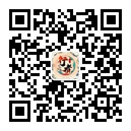

行者无疆实践团招新开始啦！
“行者无疆”2021年暑假赴江苏扬州等地
社会实践团队队员招募通知
“行者无疆”社会实践团队，是一支文化调研类社会实践团队，旨在发掘与弘扬中华民族优秀传统文化，坚定文化自信，目标成为大连理工大学盘锦校区有代表性的文化调研类社会实践团队。作为大连理工大学盘锦校区系列型社会实践的团队之一，随着2021年暑假的到来，“行者无疆”社会实践团队将迎来第九期团队组建，具体情况通知如下。
一、“行者无疆”社会实践团简介
“行者无疆”社会实践团队于2016年12月正式成立，队长李含笑，指导老师邹靓靓。第一期团队20人，赴山东济南、泰安、曲阜完成调研活动；第二期团队12人，奔赴河南洛阳、安阳、登封完成调研活动；第三期团队19人，赴江苏南京、苏州完成调研活动；第四期团队15人，奔赴安徽合肥、宣城、黄山等地完成调研活动；第五期团队19人，前往陕西西安、乾陵等地完成调研活动；第六期团队19人，前往重庆完成调研活动。第七期团队19人，赴湖南长沙等地完成调研活动。第八期团队15人，赴甘肃敦煌等地完成线上调研活动。团队在校区社会实践活动调研中屡获优异成绩，个人与团队获奖多次，并多次获得团队一等奖，现计划第九期于2021年暑假赴江苏省扬州市等地进行调研。
二、实践时间
2021年7月（具体出发时间视放假时间而定），为期4～6日。
三、报名条件
1.校区本科生，优先考虑对文化探索和发展有浓厚兴趣的同学。
2.吃苦耐劳，具备较强的沟通、协调能力。
3.有责任心，能担任起团队至少一项拆分的目标工作，服从团队安排。
4.有主见，能提出自己想法并主动沟通，具备团队意识。
四、费用
初步估算本次社会实践基本花费（往返车票、住宿、城市间交通费、各类团队用品等）为1300元RMB/人（具体金额以社会实践最终落实价格为准，获奖补贴暂未算入在内）。
五、报名选拔
1.请有意参加该社会实践项目的同学先取得家长的同意。
2.请认真阅读附件一中的专员岗位及职责表，并填写附件二《“行者无疆”社会实践团队报名申请表》。
3.请将报名表命名：姓名-XX专员-电话。
4.文件电子版（报名表）请于6月3日（周四）23:00前发送至邮箱2758025831@qq.com，并于面试时附上纸质报名申请表一份。
5.团队负责人将对报名表进行审核，经过筛选报名表后择优面试，预计一轮选拔，面试时间及地点短信通知。
6.面试暂定6月6日（周日）下午及晚上，以短信通知内容为最终标准。
未按要求编辑文件及邮件名称者，一律无选拔资格。
六．注意事项
1.团队预计将在面试结束四天内告知选拔结果，无论是否录用，都会发出信息，具体结果以邮件内容为准。
2.选拔成员一经录用，不得无故退出。如因特殊情况，不能参与本次实践，至少提前15天告知负责人，不得临时退出；所选拔的队员在本次实践结束后，仍有责任完成团队后期相关活动及招募宣传的工作，直至下一期团队组建完成，忌中途退出。
3.队员在进入团队后，将会接受与实践相关的短期培训，若不能达到团队要求，“行者无疆”实践团有权利进行劝退。
七、咨询方式
名誉队长：李含笑
带队队长：王婧霖
电话：18342784028
QQ：315867186
E-mail：315867186@qq.com
行者酱QQ：2758025831
行者无疆实践团交流群：456848281
更多信息敬请关注行者无疆团队微信公众号：“行者无疆实践团”

注意啦：关注行者无疆公众号，后台回复“报名表”，就可以下载第九期行者无疆报名表和职责表啦！